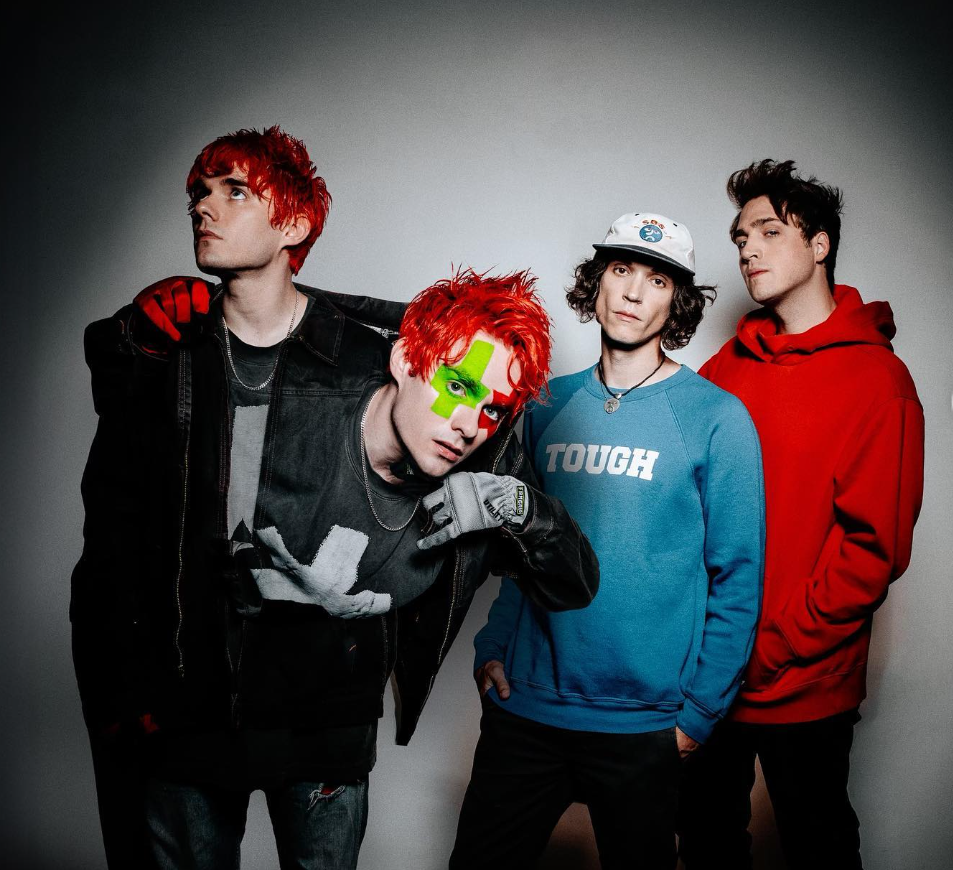

Waterparks is an American rock band formed in Houston, Texas in 2011. The group currently consists of lead vocalist and rhythm guitarist Awsten Knight, backing vocalist and lead guitarist Geoff Wigington, and backing vocalist and drummer Otto Wood. They are currently under Fueled by Ramen and have made many amazing albums. One of their songs, namely Telephone, was even featured in the hit show Heartstopper.
Intellectual Property is currently their newest album. The songs in the album are:
Strutf*cker
Real Super Dark
Funeral Grey
Brainwashed
2 Best Friends
End of The Water(Feel)
Self Sabotage
Ritual
Fuck About It (feat. blackbear)
Closer
A Night Out on Earth
Sneaking Out of Heaven